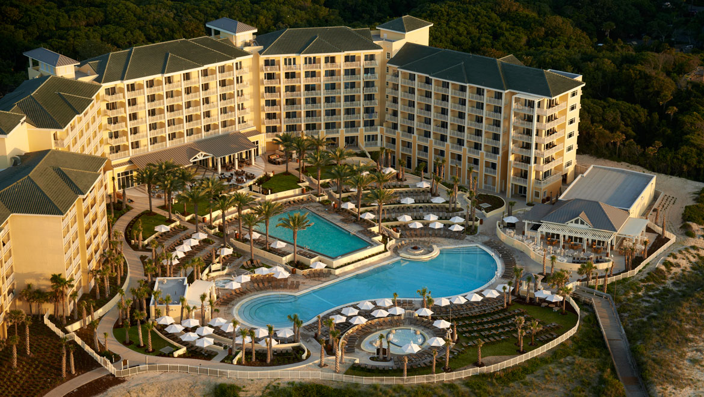

Personal Statement: I love to work hard and pride myself on doing the best job possible!
- Education
- Gonnzaga University Business School
- Majoring in business with a minor in biology
- GPA: 3.9
- Sophmore standing with over 48 credits

- Middlesex Community College
- 30 earned credits at MCC
- Made the presidents list at MCC
- Westford Academy High School
- Graduated Suma Cum Laude
- Experience
- Amelia's Wheels at the Omni on Amelia Island
- Trash Trux Community Service Member

- Skills
- Proficient in Business information systems(SQL,HTML,TABLEAU)
- I coded this website
- Accounting, working with financial statements and analysis
- Working cash registers
- Communicating and being freindly with customers
- Cooking and kitchen prep
- Athletic